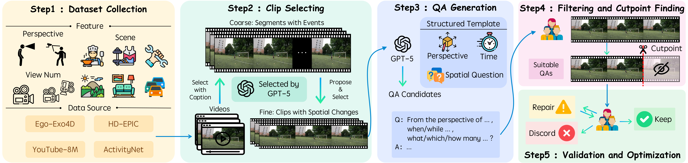

Spatial Causal Prediction in Video
Abstract
Spatial reasoning, the ability to understand spatial relations, causality, and dynamic evolution, is central to human intelligence and essential for real-world applications such as autonomous driving and robotics. Existing studies, however, primarily assess models on visible spatio-temporal understanding, overlooking their ability to infer unseen past or future spatial states. In this work, we introduce Spatial Causal Prediction (SCP), a new task paradigm that challenges models to reason beyond observation and predict spatial causal outcomes. We further construct SCP-Bench, a benchmark comprising 2,500 QA pairs across 1,181 videos spanning diverse viewpoints, scenes, and causal directions, to support systematic evaluation. Through comprehensive experiments on 23 state-of-the-art models, we reveal substantial gaps between human and model performance, limited temporal extrapolation, and weak causal grounding. We further analyze key factors influencing performance and propose perception-enhancement and reasoning-guided strategies toward advancing spatial causal intelligence.
Spatial Causal Prediction


First image description.

Second image description.

Third image description.

Fourth image description.
Another Carousel
BibTeX
@article{zhao2026spatialcausalprediction,
title={Spatial Causal Prediction in Video},
author={Yanguang Zhao and Jie Yang and Shengqiong Wu and Shutong Hu and Hongbo Qiu and Yu Wang and Guijia Zhang and Kaizhe Chen and Hao Fei and Chia-Wen Lin and Mong-Li Lee and Wynne Hsu},
journal={CVPR Findings},
year={2026},
url={https://guangstrip.github.io/SCP-Bench/}
}